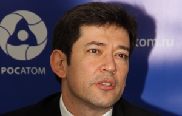

Россия не вводила запрет на поставку топлива для атомных электростанций Украины
Недавно в российских СМИ появилась информация со ссылкой на информагентство ИТАР-ТАСС о том, что Россия якобы ввела запрет на поставку топлива к атомным электростанциям Украины.Как заявил на совещании с президентом РФ Владимиром Путиным вице-премьер Дмитрий Рогозин, запрет введен из-за нестабильно ситуации в этой стране.
Вице-премьер Дмитрий Рогозин сообщил на совещании с президентом РФ Владимиром Путиным, что запаса топлива на АЭС Украины хватит только на март и апрель – сообщало ИТАР-ТАСС.По словам Рогозина, отдельная проблема заключается в транзите ядерного топлива через Украину российским партнерам в Восточной Европе.Кроме того, есть вопросы с поставками топлива самим атомным станциям соседнего государства.
«Эта информация абсолютно не соответствует действительности», — сообщил в эксклюзивном интервью УНИАН генеральный представитель ГК «Росатом» в Восточной Европе Александр Мертен.По его словам, корпорация «Росатом» и все предприятия, которые в нее входят, несмотря на политические или другие разногласия, всегда обеспечивали выполнение взятых на себя обязательств и условий подписанных договоров.
«Мы ни на секунду не прекращали нашего сотрудничества и взаимодействия с украинскими партнерами – НАЭК «Энергоатом», госконцерном «Ядерное топливо» и другими предприятиями.Мы четко по графику выполняем все взятые на себя обязательства по поставкам ядерного топлива, оборудования, материалов, проведению работ и предоставлению услуг на украинских АЭС», — сказал Мертен.
По его словам, был запрет не на поставки, а на транзит ядерного топлива через территорию Украины в другие страны.И это предписание выдано не российской стороной, а украинской.«Мы еще вначале февраля по линии МИД получили уведомление Госинспекции ядерного регулирования Украины о приостановлении перевозок ядерных материалов по территории Украины и введении временного запрета на такой вид перевозок.Уверен, что при нормализации обстановки на территории Украины, ГИЯР Украины снимет все вынужденно введенные ограничения», — сказал Мертен.
По материалам: УНИАН.
Posted On: 2014-03-06T21:00:00

Content Date: 2014-03-06
Download Date: 2021-07-16
Document ID: L0C04F9BT